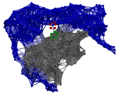
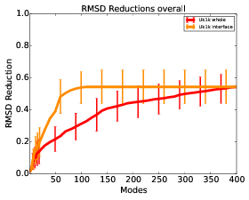
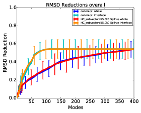
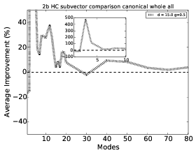
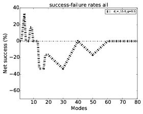
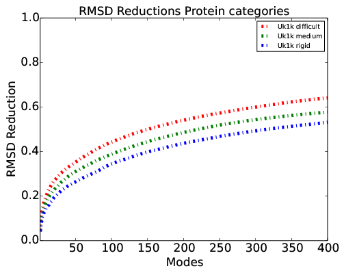

cNMA Development & Usage DocumentationTomasz Oliwa, oliwa@ttic.edu |
Abstract:
This is the work in progress documentation for the cNMA set of scripts. It containts both usage hints for a user points of view as well as useful developer notes.

Contents
1 How to update the manual
The manual is written as a *.tex file and can be compiled with “pdflatex” to generate a “*.pdf” file as follows:
$ pdflatex nmamanual1.tex
With the program “hevea”, a HTML version of the manual including all pictures and illustrations is possible as follows:
$ hevea nmamanual1.tex
$ imagen nmamanual1
$ hevea nmamanual1.tex
The command above will generate a “*.html” file. The “hevea” command might complain that the “seqsplit” command has not been found as: “Command not found:
seqsplit”. This is normal, the “seqsplit” command is used for the PDF version of this manual. It forces an automatic line break of long names that would otherwise go beyond the margin of a PDF page. With hevea, a HTML version is generated which is not bound by horizontal page margins, and “seqsplit” is not necessary.
2 cNMA Prerequisites
The prerequisites for cNMA are:
-
Python >= 2.7
- ProDy >= 1.5.1 http://prody.csb.pitt.edu/
- NumPy (tested on 1.8.0), SciPy (tested on 0.12.1 and 0.13.3)
- Matplotlib
2.1 Anaconda - A collection of prerequisites
The aforementioned (except ProDy) were installed on the dao cluster in userspace through the Anaconda Python package http://continuum.io/downloads. At the time of writing, the anaconda package for 64 Bit machines is “Anaconda-2.0.1-Linux-x86_64.sh” and can be installed through the following commands:
$ chmod +x Anaconda-2.0.1-Linux-x86_64.sh
$ ./ Anaconda-2.0.1-Linux-x86_64.sh
The will create a about 1.36 GB large directory “anaconda” in the home directory “ /”, containing the binaries, packages and environments of Python and the libaries. To then run a Python program with the Python interpreter from Anaconda, the path to it should be given in the commandline, such as:
$ ~/anaconda/bin/python x.py
In this manual, it is assumed that the cNMA and other Python programs are run with the prerequisites installed, and a Python 2.7 interpreter is called either through the Anaconda path or by having it installed otherwise.
Anaconda is fairly large and installs numerous packages. To reduce the needed installation space, the package ”Miniconda“ can be used instead. It is available from http://conda.pydata.org/miniconda.html#miniconda. Miniconda contains a version of Python and the conda installer, through which specific pre-requisites (such as NumPy) can be obtained.
Commandline examples to do so can be found on the Miniconda website.
ProDy itself can be also installed once Anaconda has finished the installation process. Anaconda provides “pip“, a package manager for Python to do so as follows:
$ ~/anaconda/bin/pip install ProDy
The pip installation of ProDy will be placed inside the anaconda directory.
2.2 Download of cNMA
cNMA is available on bitbucket at: https://bitbucket.org/cNMA/cnma
This git repository is (at the time of writing) a private repository. As a member of cNMA, it is possible to give other users access to it through the link ”Invite users to this repo Send invitation“ on aforementioned URL on the top right-hand site.
cNMA can be downloaded through a web browser by clicking ”Download repository” at: https://bitbucket.org/cNMA/cnma/downloads
cNMA can be also obtained by using “Git” through:
$ git clone https://USER@bitbucket.org/cNMA/cnma.git
where “USER” should be replaced by the bitbucket username that has access to cNMA. The commandline will promt for the users bitbucket password.
2.3 Modification to Prerequisites
Modifications to the ProDY prerequisite have been made and can be found in the folder “cnma_Manual/modified/”. The modifications are:
-
ProDy:
-
Add method matchTNMAChains in prody.proteins.compare
This method defines chain matching based on Bio.pairwise2 from Biopython and forces it.
The chain matching method was too deeply rooted in ProDy to create a new one in the NMAUnified programs, hence a method “matchTNMAChains” was created based on
the ProDy method “matchChains” and put into prody.proteins.compare (in the file compare.py)
- Bugfix to pass the argument zeros in the method calcANM in prody.dynamics.anm, to calculate trivial normal modes (in the file anm.py)
- Addon with the zeros parameter to write trivial normal modes directly with the writeNMD method in prody.dynamics.nmdfile. This addon is not necessary to run the cNMA data collection, as these perform the writing of trivial normal modes into the NMD files via shell scripting and temp files. However, this addon is useful for direct experimentation with ProDy and normal modes (in the file nmdfile.py) to be able to visualize modes directly after calculating them.
The files are located in the “cnma_Manual/modified/” subfolder of this manual and should be copied over the original ProDy files with the same name.
A script called “replacePrerequisites.sh” is provided along with the modified files, which will place them in their right position. To run it, the current work directory should be changed into its folder, the script made executable and then finally run, this is done by the following three commands:$ cd cnma_Manual/modified/
$ chmod +x replacePrerequisites.sh
$ ./replacePrerequisites.sh
The contents of “replacePrerequisites.sh” itself is:
#!/bin/bash
cp compare.py ~/anaconda/lib/python2.7/site-packages/prody/proteins/
cp anm.py ~/anaconda/lib/python2.7/site-packages/prody/dynamics/
cp nmdfile.py ~/anaconda/lib/python2.7/site-packages/prody/dynamics/
rm -f ~/anaconda/lib/python2.7/site-packages/prody/proteins/compare.pyc
rm -f ~/anaconda/lib/python2.7/site-packages/prody/dynamics/anm.pyc
rm -f ~/anaconda/lib/python2.7/site-packages/prody/dynamics/nmdfile.pyc
If anaconda is installed in a different path then specified by the script above, this path needs to be located to replace the modified .py files.
For instance, on dao the userspace path is:
/anaconda/lib/python2.7/site-packages/prody/
and on the local Fedora machine it is:
/usr/lib64/python2.7/site-packages/prody/
The corresponding *.pyc also need to be deleted so that Python will guarantee to compile the .py file anew. A .pyc file is usually made when the Python .py file is imported by some other script and contains the compiled byte-code of the source file.
3 Data collection
Usage overview over how to generate the cNMA results.
3.1 NMAUnified
The main program for the cNMA is calculation is “NMAUnified.py”. Its input are a configuration class describing the experiment and four proteins in PDB format. Its output is written in a folder
and contains the experimental results such as RMSD reduction and NMD files.
3.1.1 Input
Running it without arguments prints a help text with usage and argument descriptors:
$ python NMAUnified.py
Ultimatively, NMAUnified expects five arguments in the following order:
-
config, the Configurations class
- protein1_A, the Protein 1 in first conformational state
- protein2_A, the Protein 2 in first conformational state
- protein1_B, the Protein 1 in second conformational state
- protein2_B, the Protein 2 in second conformational state
In config, the parameters of the experiments are set, each parameter is documented via a comment. Examples of parameters are the output paths,
the kind of NMA performed or the RMSD fitting precision.
An example of how to run the program with a profiler attached to it is:
$ python NMAUnified.py --profile cnma_Manual/configuration/example1/2b_individual_2k_whole_bb_HC_U1_modelsubmatrix_d8.0_gamma0.25_projectionTrue_projectionStylefull_align2bindividual.py cnma_Manual/configuration/example1/1BKD_r_u.pdb cnma_Manual/configuration/example1/1BKD_l_u.pdb cnma_Manual/configuration/example1/1BKD_r_b.pdb cnma_Manual/configuration/example1/1BKD_l_b.pdb
3.1.2 Example 1
These files can be found in “cnma_Manual/configuration/example1/”
After running the command above, the expected output is in the folder “cnma_Manual/configuration/example1/2b_individual_2k_whole_bb_HC_U1_
modelsubmatrix_d8.0_gamma0.25_projectionTrue_projectionStylefull_align2bindividual/”
The optional parameters, such as “–profile” for NMAUnified are:
-
-h, –help show this help message and exit
- –profiler Run the program with a profiler attached to it, that
writes runtime information after a successful run."
- –outputPath OUTPUTPATH
Directly specify the output path of the program,
ignoring the output path in the Configuration
- –affirmProteinNames AFFIRMPROTEINNAMES
If the arguments for protein1_A, protein2_A,
protein1_B or protein2_B do not follow the
xxxx_r/l_l/b.pdb naming scheme of the Protein-Protein
Docking Benchmark 4.0, provide "receptor" to tell the
program that protein1 is a receptor (and protein2
therefore a ligand), or provide "ligand" to state the
opposite. The titles of the proteins will be adjusted
accordingly.
3.1.3 Output
The output will be written outputPath+experimentNamePrefix+experimentName.
The variables outputPath and experimentNamePrefix are set in the Configuration file, the experimentName is determined by the filename of the protein inputs. An example from a Configuration.py file can looks as follows:
# Path to the output
self.outputPath = "/home/not/Downloads/outputtest/"
# Experiment name prefix to be used to create the results output folder
self.experimentNamePrefix = "2b_complex_2k_whole_bb_HC_0_align2bindividual"
3.1.4 Configuration
The Configurations file given to NMAUnified determines the experiment setup. In the following, at first a parameter dictionary for the configuration file is given, followed by a listing of example configuration files accompaning data gathering files.
3.1.5 Configuration Dictionary
The parameters (here in boldface) are present in a configuration file. After each parameter, an explanation of it is given here, followed by an example of a set parameter.
-
self.outputPath: Explanation: The path to the output.
Example: self.outputPath = "$HOME/workspace/TNMA1/src/cnma_Manual/configuration/example1/" - self.experimentNamePrefix: Explanation: Experiment name prefix to be used to create the results output folder.
Example: self.experimentNamePrefix = "2b_individual_2k_whole_bb_HC_U1_modelsubmatrix_d8.0_gamma0.25_projectionTrue_projectionStylefull_align2bindividual" - self.investigationsOn: Explanation: Data collection on individual proteins or for a complex. Possible values: "Individual", "Complex".
Example: self.investigationsOn = "Individual" - self.measuresOnWhole: Explanation: Data collection on the whole protein/complex if true, else on the interface. Possible values: "True", "False".
Example: self.measuresOnWhole = True - self.calculateZeroEigvalModes: Explanation: Calculate zero eigenvalue modes.
Example: self.calculateZeroEigvalModes = True - self.align: Explanation: Align styles of unbound to bound. The setting of the aforementioned measuresOnWhole will furthermore determine if the alignment basis is the whole or the interface. Possible values: "alpha": align protein1 and protein2 independently, "beta" : align protein 1 and rigid bodily "drag" protein 2 along, "complexOnComplex": align complex on complex, "2bcomplex": first align alpha whole to create the complex, then align the complex again based on complexOnComplex, "2bindividual": first align alpha whole to create the complex, then align the complex again based on beta of the reference segment for whole or interface
Example: self.align = "2bindividual" - self.complexRMSDreduction: Explanation: The setup of the normal mode array for data gathering, for self.investigationsOn set to "Individual", choose "2k", for investigations on "Complex", choose "2k" for a cNMA setup to be further specified in the parameter self.whichCustomHC, or choose "1k1k" or "1k1k6" for a conventional NMA setup, the latter enabling six rigid body modes for data gathering RMSD reduction purposes.
Example: self.complexRMSDreduction = "1k1k6" - self.whichCustomHC: Explanation: HC setup, for self.investigationsOn set to "Individual", choose "HC_U1". For self.investigationsOn set to "Complex", choose "HC_U1" for allowing intermolecular interactions, "HC_0" for not allowing intermolecular interactions, "HC_06" for "HC_0" and 6 trival modes of the ligand as first modes to be used for RMSD reduction calculations, "HC_U1_1k1k" to calculate modes from "HC_U1", then split them into 1k1k component vectors.
Example: self.whichCustomHC = "HC_U1" - self.filterPDB: Explanation: When parsing PDB files, filter by ProDys "protein" selection? Without this filtering (set as "None"), mismatches have occurred.
Example: self.filterPDB = "protein" - self.whatAtomsToMatch: Explanation: What atoms are subject to the matching of chains, Possible values: "calpha", "bb" or "all".
Example self.whatAtomsToMatch = "bb" - self.customH: Explanation: Create the modified Hessians or keep conventional/canonical Hessians. If set to "False", only canonical NMA will be performed, if set to "True", the potential U1 will be used to involve intermolecular interactions.
Example: self.customH = True - self.customHRdistance: Explanation: Cut-off distance D for intermolecular springs.
Example: self.customHRdistance = 8.0 - self.customForceConstant Explanation: Force constant gamma for intermolecular springs.
Example: self.customForceConstant = 0.25 - self.whichCustomHIndividual: Explanation: Method to obtain the normal modes for the RMSD reduction on self.investigationsOn set to "Individual", the valid settings are: "HC_subvector": subvector method, "submatrix" : submatrix method, "canonical": use normal modes from the canonical individual protein.
Example: self.whichCustomHIndividual = "submatrix" - self.projectHessian: Explanation: Use a transformation/projection technique on the Hessian (projection matrix treadment 8.27 NMA book or Non-Eckart body Frame Fuchigami U matrix) is "True", else do not use such a technique.
Example: self.projectHessian = True - self.projectionStyle: Explanation: If self.projectHessian is "True", define the style of the transformation/projection. Valid settings are "full": project away from protein1 part, "fullComplex": project away from the whole complex, "fixedDomainFrame": use the U transformation matrix to setup the receptor as fixed domain.
Example: self.projectionStyle = "full" - self.rescaleEigenvalues: Explanation: Use a re-ranking of eigenvalues, known as the lambdaR approach.
If set to "True", eigenvalues are re-ranked via lambdaR, if set to "False", no re-ranking takes place.
Example: self.rescaleEigenvalues = False - self.floatingPointThreshold: Explanation: Small value to consider skipping the protein investigation if the initial RMSD is not bigger than it.
Example: self.floatingPointThreshold = 0.000000000001 - self.stopRMSDReductionAt: Explanation: Set the number of maximal normal modes, at which the RMSD reduction based on the Swarmdock betas approach is stopped. To not have any limit/stop, set this to a high value.
Example: self.stopRMSDReductionAt = 400 - self.maxModesToCalculate: Explanation: Upper limit for mode calculation, set to very high number (1000000) to calculate 3n-6 modes. For self.investigationsOn set to "Individual", this is the number of modes (excluding trivial modes) to be calculated. For self.investigationsOn set to "Complex", this is the value k, meaning that 2k modes (excluding trivial modes) will be obtained for the complex.
Example: self.maxModesToCalculate = 400 - self.precisionBetaFitting: Explanation: Precision for RMSD beta fitting.
Example: self.precisionBetaFitting = 1e-6 - self.maxIterBetas: Explanation: How many iterations are to be allowed for the betas fitter (Swarmdock approach).
Example: self.maxIterBetas = 60000
3.1.6 Configuration Files
Inside the “configuration/” folder are the following files:
3.1.7 Data Dictionary - Individual
For individual protein investigations, specified in the Configuration.py file as follows,
# NMAUnified investigationsOn on "Individual" or "Complex"
self.investigationsOn = "Complex"
the outputed files inside the path outputPath+experimentNamePrefix+experimentName are (using the input to NMAUnified with 1ACB_r_u.pdb 1ACB_l_u.pdb 1ACB_r_b.pdb 1ACB_l_b.pdb) :
Note that files towards either the whole protein or the interface will be generated, this depends on the specified experiment setting in the configuration file as can be set to True (investigations on the whole protein) or False (investigations in the interface) as follows:
# measures on "whole" if true, else on "interface"
self.measuresOnWhole = True
3.1.8 Data Dictionary - Complex
The following changes from the Individual outputs are present:
-
Correlation and Collectivity measures are not created.
- L_RMSD_unbound_to_superposed_bound.txt: The L_RMSD of either the full ligand or the ligands interfaces, depending on the setting in the measuresOnWhole variable.
- L_RMSReductions.txt: While the calculation of βs is obtained on the whole complex or complex interface modes via the Swarmdock approach (depending on the setting in the measuresOnWhole variable), the RMSD reductions as viewed from only ligand or ligand interface atoms (depending on the setting in the measuresOnWhole variable) are outputed.
4 Data analysis
An usage overview is given on how post analysis, plotting and visualization is performed after the experimental data has been collected, as described in Section 3. Since the experimental output described in Section 3 is almost entirely based on separate txt files (with exceptions such as nmd models), the programs in this section can be replaced by own data analysis programs.
4.1 Quickstart Examples
In the following, examples with the input, expected output and the necessary Bash script are given to show how to call the various data analysis scripts to generate post analysis files and plots. The examples are self-contained, and by successively following each example, more plots and results will be obtained and explained. For the purposes of these examples, a subset of six proteins has been choosen from the Benchmark 4.0. Two proteins each are taken from a difficulty category. The results and plots obtained from these quickstart examples are not to be used to gain insight on protein modeling, but to provide insight on calling and using the helper scripts for data analysis, so that the user can write own helper scripts to call cNMA methods.
-
Difficult: "1ACB_r_u", "1ACB_l_u"
- Medium: "1A2K_r_u", "1A2K_l_u"
- Rigid: "1AK4_r_u", "1ATN_l_u"
4.2 Example 2
This example shows how to run a simple post analysis on the canonical NMA results. The necessary files can be found in “cnma_Manual/configuration/example2/”, the Bash script is located in “helperScripts/runAnalysis_example2.sh”. Run it as:
$ ./runAnalysis_example2.sh
Folders/files necessary to be present, which will be used in the input process:
Folders:
2b_individual_canonical_whole_bb_align2bindividual
2b_individual_canonical_interface_bb_align2bindividual
Output:
Folder:
2b_individual_canonical_whole_bb_align2bindividual_results/..
The plots will be located in the “configuration/example2/2b_individual_canonical_whole_bb_align2bindividual_results/plots/” folder, such as the following Figure, which shows the RMSD reduction as the number of (slowest) modes is increased:

| Figure 1: Example 2 - RMSD overall reduction |
4.2.1 Example 2 - Shell script notes
Notes about “helperScripts/runAnalysis_example2.sh”: Results2Plots.py has various flags, such as –dontCompare, which is used when the program should not compare two experimental results, but simply provide the post analysis of a single experimental setup. These flags are all commented through the “argparse” Python module, and help/explanation is given by calling the program “Results2Plots.py” without any arguments.
#!/bin/bash
# paths
outputPrefix="$HOME/workspace/TNMA1/src/cnma_Manual/configuration/example2/"
# parameters
alignstyle="align2bindividual"
# run analysis and plotter on canonical 1k1k
$HOME/anaconda/bin/python Results2Plots.py --dontCompare --dontCombine --plotOnlyReduction --pythonPath /home/oliwa/anaconda/bin/python --uniqueResultsPrefix_Path $outputPrefix"2b_individual_canonical_whole_bb_"$alignstyle --uniqueResultsPrefixInterface_Path $outputPrefix"2b_individual_canonical_interface_bb_"$alignstyle --resultsDescriptor Uk1k
4.3 Example 2 - complex
This example shows how to run a simple post analysis on the canonical NMA results for RMSD reduction on the complex . The necessary files can be found in “cnma_Manual/configuration/example2_complex/”, the Bash script is located in “helperScripts/runAnalysis_example2_complex.sh”. Run it as:
$ ./runAnalysis_example2_complex.sh
Folders/files necessary to be present, which will be used in the input process:
Folders:
2b_complex_1k1k6_whole_bb_HC_0_D0.001_gamma1.0_projectionFalse_projectionStylefull_align2bindividual
2b_complex_1k1k6_interface_bb_HC_0_D0.001_gamma1.0_projectionFalse_projectionStylefull_align2bindividual
Output:
Folder:
2b_complex_1k1k6_whole_bb_HC_0_D0.001_gamma1.0_projectionFalse_projectionStylefull_align2bindividual_results/..
The plots will be located in the “configuration/example2_complex/2b_complex_1k1k6_whole_bb_HC_0_D0.001_gamma1.0_projectionFalse_projectionStylefull_align2bindividual_results/plots/” folder.
4.3.1 Example 2 - Complex - Shell script notes
Notes about “helperScripts/runAnalysis_example2.sh”: Results2Plots.py has various flags, such as –dontCompare, which is used when the program should not compare two experimental results, but simply provide the post analysis of a single experimental setup. These flags are all commented through the “argparse” Python module, and help/explanation is given by calling the program “Results2Plots.py” without any arguments.
#!/bin/bash
# paths
outputPrefix="$HOME/workspace/TNMA1/src/cnma_Manual/configuration/example2_complex/"
# parameters
alignstyle="align2bindividual"
# run analysis and plotter on canonical 1k1k
$HOME/anaconda/bin/python Results2Plots.py --isComplex --dontCompare --dontCombine --plotOnlyReduction --pythonPath /home/oliwa/anaconda/bin/python --uniqueResultsPrefix_Path $outputPrefix"2b_complex_1k1k6_whole_bb_HC_0_D0.001_gamma1.0_projectionFalse_projectionStylefull_"$alignstyle --uniqueResultsPrefixInterface_Path $outputPrefix"2b_complex_1k1k6_interface_bb_HC_0_D0.001_gamma1.0_projectionFalse_projectionStylefull_"$alignstyle --resultsDescriptor Uk1k
4.4 Example 3
This example shows how to run a post analysis to compare results from two NMA runs, for instance to compare a cNMA data gathering run with the canonical NMA results from Example 2. Here, the intermolecular cutoff distance D=15 and the spring constant γ = 0.5. The necessary files can be found in “cnma_Manual/configuration/example3/”, the Bash script is located in “helperScripts/runAnalysis_example3.sh”. Run it as:
$ ./runAnalysis_example3.sh
Folders/files necessary to be present, which will be used in the input process:
Folders:
2b_individual_2k_whole_bb_HC_U1_modelHC_subvector_d15.0_gamma0.5_projectionTrue_projectionStylefull_align2bindividual
2b_individual_2k_interface_bb_HC_U1_modelHC_subvector_d15.0_gamma0.5_projectionTrue_projectionStylefull_align2bindividual
2b_individual_canonical_whole_bb_align2bindividual
2b_individual_canonical_interface_bb_align2bindividual
2b_individual_canonical_whole_bb_align2bindividual_results
Output:
Folder:
2b_individual_2k_whole_bb_HC_U1_modelHC_subvector_d15.0_gamma0.5_projectionTrue_projectionStylefull_align2bindividual_results/..
The plots will be located in the “configuration/example3/2b_individual_2k_whole_bb_HC_U1_modelHC_subvector_d15.0_gamma0.5_projectionTrue_projectionStylefull_align2bindividual_results/plots/” folder. The Figure from Example 2, for instance, will now display the RMSD reduction results from both methods:

| Figure 2: Example 3 - RMSD overall reduction |
4.4.1 Example 3 - Shell script notes
Notes about “helperScripts/runAnalysis_example3.sh”: Script variables such as “gammas” are used to define which parameters will the script loop over in the post analysis. This is useful to rapidely generate plots for a collection of experimental results. Also, the flag “–plotOnlyReduction” from example 2 is not used here, so that bar plots denoting the quality of modes (measured on overlap, correlation and collectivity) are generated. Example 3 also provides a (commented out) version of calling the post analysis on a cluster. This example showcases the style of changing direct shell commands to commands to be executed on a cluster.
If the following is a bash command:
command
This is its equivalent run on a grid engine cluster:
echo command > runme.sge
qsub -cwd runme.sge
In the example 3 in “helperScripts/runAnalysis_example3.sh”, it is expressed as:
#!/bin/bash
# paths
outputPrefix="$HOME/workspace/TNMA1/src/cnma_Manual/configuration/example3/"
# parameters
alignstyle="align2bindividual"
#run analysis and plotter on U1
resolutionSet="bb"
models="2k"
ds="15.0"
gammas="0.5"
whichCustomHIndividual="HC_subvector"
projections="True"
alignstyle="2bindividual"
projectionstyles="full"
for model in $models
do
for resolution in $resolutionSet
do
for d in $ds
do
for gamma in $gammas
do
for projection in $projections
do
for align in $alignstyle
do
for customHIndividual in $whichCustomHIndividual
do
for projectionstyle in $projectionstyles
do
if [ "$projection" == "True" ]
then
projectionString="projectionTrue"
else
projectionString="projectionFalse"
fi
#_projectionStylefull_alignmentL
#2b_individual_2k_whole_bb_HC_U1_modelHC_subvector_lambdaRTrue_d12.0_gamma0.5_projectionTrue_projectionStylefull_align2bindividual
foldernameWhole=$outputPrefix"2b_individual_"$model"_whole_"$resolution"_HC_U1_model"$customHIndividual"_d"$d"_gamma"$gamma"_"$projectionString"_projectionStyle"$projectionstyle"_align"$align"/"
foldernameInterface=$outputPrefix"2b_individual_"$model"_interface_"$resolution"_HC_U1_model"$customHIndividual"_d"$d"_gamma"$gamma"_"$projectionString"_projectionStyle"$projectionstyle"_align"$align"/"
compareAgainstfoldernameWhole=$outputPrefix"2b_individual_canonical_whole_bb_align2bindividual/"
compareAgainstfoldernameInterface=$outputPrefix"2b_individual_canonical_interface_bb_align2bindividual/"
### run analysis and plotter on the cluster
### echo $HOME/anaconda/bin/python Results2Plots.py --dontCombine --categoryMultiplier 1.0 --pythonPath $HOME/anaconda/bin/python --uniqueResultsPrefix_Path $foldernameWhole --uniqueResultsPrefixInterface_Path $foldernameInterface --canonicalResults_Path $compareAgainstfoldernameWhole --canonicalResultsInterface_Path $compareAgainstfoldernameInterface --resultsDescriptor $customHIndividual"d"$d"k"$gamma"p"$projection > runme.sge
### qsub -cwd runme.sge
### run analysis and plotter local
$HOME/anaconda/bin/python Results2Plots.py --dontCombine --categoryMultiplier 1.0 --pythonPath $HOME/anaconda/bin/python --uniqueResultsPrefix_Path $foldernameWhole --uniqueResultsPrefixInterface_Path $foldernameInterface --canonicalResults_Path $compareAgainstfoldernameWhole --canonicalResultsInterface_Path $compareAgainstfoldernameInterface --resultsDescriptor $customHIndividual"d"$d"k"$gamma"p"$projection
done
done
done
done
done
done
done
done
4.5 Example 3 - Complex
This example shows how to run a post analysis to compare results from two NMA complex runs, for instance to compare a cNMA data gathering run with the canonical NMA results from Example 2 - Complex. Here, the intermolecular cutoff distance is D=15 and the spring constant isγ = 0.25. The necessary files can be found in “cnma_Manual/configuration/example3_complex/”, the Bash script is located in “helperScripts/runAnalysis_example3_complex.sh”. Run it as:
$ ./runAnalysis_example3_complex.sh
Folders/files necessary to be present, which will be used in the input process:
Folders:
2b_complex_1k1k6_interface_bb_HC_0_D0.001_gamma1.0_projectionFalse_projectionStylefull_align2bindividual
2b_complex_1k1k6_whole_bb_HC_0_D0.001_gamma1.0_projectionFalse_projectionStylefull_align2bindividual
2b_complex_1k1k6_whole_bb_HC_0_D0.001_gamma1.0_projectionFalse_projectionStylefull_align2bindividual_results
2b_complex_2k_interface_bb_HC_U1_D15.0_gamma0.25_projectionTrue_projectionStylefull_align2bindividual
2b_complex_2k_whole_bb_HC_U1_D15.0_gamma0.25_projectionTrue_projectionStylefull_align2bindividual
Output:
Folder:
2b_complex_2k_whole_bb_HC_U1_D15.0_gamma0.25_projectionTrue_projectionStylefull_align2bindividual_results/..
The plots will be located in the “configuration/example3_complex/2b_complex_2k_whole_bb_HC_U1_D15.0_gamma0.25_projectionTrue_projectionStylefull_align2bindividual_results/plots/” folder.
4.6 Example 4
Building on example 3, example 4 shows how to generate text files containing the average of the relative measure between two experimental results. The necessary files can be found in “cnma_Manual/configuration/example4/”, the shell script in “helperScripts/runMakeAverageofRelativePerformance_example4.sh”. Run it as:
$ ./runMakeAverageofRelativePerformance_example4.sh /home/oliwa/workspace/TNMA1/src/cnma_Manual/configuration/example4/ /home/oliwa/workspace/TNMA1/src/BenchmarkAssessmentsOfDifficulty/allinterfaceSuperposed_examples/
Folders/files necessary to be present, which will be used in the input process:
Folders:
2b_individual_2k_whole_bb_HC_U1_modelHC_subvector_d15.0_gamma0.5_projectionTrue_projectionStylefull_align2bindividual
2b_individual_2k_interface_bb_HC_U1_modelHC_subvector_d15.0_gamma0.5_projectionTrue_projectionStylefull_align2bindividual
2b_individual_canonical_whole_bb_align2bindividual
2b_individual_canonical_interface_bb_align2bindividual
2b_individual_canonical_whole_bb_align2bindividual_results
2b_individual_2k_whole_bb_HC_U1_modelHC_subvector_d15.0_gamma0.5_projectionTrue_projectionStylefull_align2bindividual_results/
Output:
Folder:
2b_individual_2k_whole_bb_HC_U1_modelHC_subvector_d15.0_gamma0.5_projectionTrue_projectionStylefull_align2bindividual_results/relativePerformanceAgainst_canonical/..
Newly generated files from the scripts provide, line by line, the relative score of the two methods, for example the file “RMSD_relativePerformance_Wholeall_pbp_ex5.txt” shows the relative performance on the whole protein (not the interface) on all (here six) proteins.
4.7 Example 4 - Complex
Building on example 4 complex , example 4 complex shows how to generate text files containing the average of the relative measure between two experimental results. This examples uses a program that can handle different step points per method (different x axis number of modes from the data gathering step), as it takes the intersection of the two step points. The necessary files can be found in “cnma_Manual/configuration/example4_complex/”, the shell script in “helperScripts/runMakeAverageofRelativePerformance_example4_complex.sh”. Run it as:
$ ./runMakeAverageofRelativePerformance_example4_complex.sh /home/oliwa/workspace/TNMA1/src/cnma_Manual/configuration/example4_complex/ /home/oliwa/workspace/TNMA1/src/BenchmarkAssessmentsOfDifficultyBoundComplex/benchmark40_example/
Folders/files necessary to be present, which will be used in the input process:
Folders:
2b_complex_1k1k6_interface_bb_HC_0_D0.001_gamma1.0_projectionFalse_projectionStylefull_align2bindividual
2b_complex_1k1k6_whole_bb_HC_0_D0.001_gamma1.0_projectionFalse_projectionStylefull_align2bindividual
2b_complex_1k1k6_whole_bb_HC_0_D0.001_gamma1.0_projectionFalse_projectionStylefull_align2bindividual_results
2b_complex_2k_interface_bb_HC_U1_D15.0_gamma0.25_projectionTrue_projectionStylefull_align2bindividual
2b_complex_2k_whole_bb_HC_U1_D15.0_gamma0.25_projectionTrue_projectionStylefull_align2bindividual
2b_complex_2k_whole_bb_HC_U1_D15.0_gamma0.25_projectionTrue_projectionStylefull_align2bindividual_results
Output:
Folder:
2b_complex_2k_whole_bb_HC_U1_D15.0_gamma0.25_projectionTrue_projectionStylefull_align2bindividual_results/relativePerformanceAgainst_canonical/..
Newly generated files from the scripts provide, line by line, the relative score of the two methods, for example the file “RMSD_relativePerformance_Wholeall_pbp_ex5.txt” shows the relative performance on the whole protein (not the interface) on all (here six) proteins. Also, the file “RMSD_relativePerformance_Wholeall_pbp_ex5_stepPointsUnion.txt” shows the number of modes used for relative score, line by line corresponding to the values in “RMSD_relativePerformance_Wholeall_pbp_ex5.txt”.
4.8 Example 5
The data of the average of the relativ performance, obtained in example 4, is plotted in this example. The necessary files can be found in “cnma_Manual/configuration/example5/”, the shell script can be found in “helperScripts/runrelative_improvement_example5.sh”. Run it as:
$ ./runrelative_improvement_example5.sh
Folders/files necessary to be present, which will be used in the input process:
Folders:
2b_individual_2k_whole_bb_HC_U1_modelHC_subvector_d15.0_gamma0.5_projectionTrue_projectionStylefull_align2bindividual
2b_individual_2k_interface_bb_HC_U1_modelHC_subvector_d15.0_gamma0.5_projectionTrue_projectionStylefull_align2bindividual
2b_individual_canonical_whole_bb_align2bindividual
2b_individual_canonical_interface_bb_align2bindividual
2b_individual_canonical_whole_bb_align2bindividual_results
2b_individual_2k_whole_bb_HC_U1_modelHC_subvector_d15.0_gamma0.5_projectionTrue_projectionStylefull_align2bindividual_results/relativePerformanceAgainst_canonical/..
Output:
Folder:
results_use_relativeImprovement/..
Examples of the comparison plots, located in the “results_use_relativeImprovement” folder, are:

| Figure 3: Example 5 - Relative measure whole |
| Figure 4: Example 5 - Relative measure interface |
4.9 Example 6
Building upon example 3, the success-failure rates are plotted in this example. The necessary files can be found in “cnma_Manual/configuration/example6/”, the shell script can be found in “helperScripts/runsuccessfailuregeneric_example6.sh”. Run it as:
$ ./runsuccessfailuregeneric_example6.sh
Folders/files necessary to be present, which will be used in the input process:
Folders:
2b_individual_2k_whole_bb_HC_U1_modelHC_subvector_d15.0_gamma0.5_projectionTrue_projectionStylefull_align2bindividual
2b_individual_2k_interface_bb_HC_U1_modelHC_subvector_d15.0_gamma0.5_projectionTrue_projectionStylefull_align2bindividual
2b_individual_canonical_whole_bb_align2bindividual
2b_individual_canonical_interface_bb_align2bindividual
2b_individual_canonical_whole_bb_align2bindividual_results
2b_individual_2k_whole_bb_HC_U1_modelHC_subvector_d15.0_gamma0.5_projectionTrue_projectionStylefull_align2bindividual_results/
Output:
Folder:
successFailureModelComparison_0.5/..
Examples of the success-failure plots, located in the “successFailureModelComparison_0.5/” folder, are:

| Figure 5: Example 5 - Success-failure whole |
| Figure 6: Example 6 - Success-failure interface |
4.10 helperScripts
The “helperScripts” folder contains python scripts that call and perform post experiment analysis and plotting. These scripts are to be called from the “helperScripts” folder.
The main program is “Results2Plots.py”, it runs a complete pipeline/chain of python programs and scripts to get from the input (experiment results of the data gathering of NMAUnified.py) to the output
(post analysis plots and results).
Looking at “Results2Plots.py” will provide a complete working example of how the various scripts have to be called to generate the output.
Running it without arguments prints a help text with usage and argument descriptors.
4.11 Results2Plots
An example of how to generate plots is provided in Listing 4.11.
#!/bin/bash
# paths
outputPrefix="/home/oliwa/data/output/individual/2b/"
# parameters
alignstyle="align2bindividual"
# run analysis and plotter on canonical 1k1k
/home/oliwa/anaconda/bin/python Results2Plots.py --dontCompare --dontCombine --plotOnlyReduction --pythonPath /home/oliwa/anaconda/bin/python --uniqueResultsPrefix_Path $outputPrefix"2b_individual_canonical_whole_bb_"$alignstyle --uniqueResultsPrefixInterface_Path $outputPrefix"2b_individual_canonical_interface_bb_"$alignstyle --resultsDescriptor Uk1k
This command will result in a folder “2b_individual_canonical_whole_bb_align2bindividual_results” in the same directory as the “uniqueResultsPrefix_Path” based on the naming scheme of “uniqueResultsPrefix_Path_results/”. It contains the output of the pipeline/chain of scripts from Results2Plots as follows:
-
2b_individual_canonical_whole_bb_align2bindividual_assessments_filtered_113_of_113_difficult/: Output of PostAnalysis.py, contains text files with post analysis statistics for difficult protein cases.
- 2b_individual_canonical_whole_bb_align2bindividual_assessments_filtered_185_of_185_medium/: As above, but for medium protein cases.
- 2b_individual_canonical_whole_bb_align2bindividual_assessments_filtered_340_of_340_all/: As above, but for all protein cases.
- 2b_individual_canonical_whole_bb_align2bindividual_assessments_filtered_42_of_42_rigid/: As above, but for rigid protein cases.
- plots/: Output of AnalysisPlotter.py, a folder with plots
- plotFile.txt: Input file to the AnalysisPlotter.py to generate the plots in “plots/”, generated by helperScripts/MakePlotFile.py
The contents of a PostAnalysis folder is as follows:
-
benchmarkPartUsed.txt: Path to the difficulty classification that this experimental results are based on.
- chanceToIncludeBestCollectivityModeInterface.txt: Measure of chance to include the highest collectivity with increasing mode number on the whole protein
- chanceToIncludeBestCollectivityModeWhole.txt: Measure of chance to include the highest collectivity with increasing mode number on the interface
- chanceToIncludeBestCorrelationModeInterface.txt: Measure of chance to include the highest correlation with increasing mode number on the whole protein
- chanceToIncludeBestCorrelationModeWhole.txt: Measure of chance to include the highest correlation with increasing mode number on the interface
- chanceToIncludeBestOverlapModeInterface.txt: Measure of chance to include the highest overlap with increasing mode number on the whole protein
- chanceToIncludeBestOverlapModeWhole.txt: Measure of chance to include the highest overlap with increasing mode number on the interface
- combinedHighestAbsolute.txt: Provides mode of highest correlation, collectivity and overlap for each protein investigated.
- dataAnalyzed.txt: How many proteins have been analyzed
- discretizedCountHighestCollectivityInterfacePercentage.txt: Data for barplot based on counting the highest collectivity on the interface
- discretizedCountHighestCollectivityWholePercentage.txt: Data for barplot based on counting the highest collectivity on the whole protein
- discretizedCountHighestCorrelationAssessedAsCollectivityInterfacePercentage.txt: Data for barplot based on counting the highest correlation (towards the true deformation vector) assessed as collectivity on the interface
- discretizedCountHighestCorrelationAssessedAsCollectivityWholePercentage.txt: Data for barplot based on counting the highest correlation assessed as collectivity on the whole protein
- discretizedCountHighestCorrelationInterfacePercentage.txt: Data for barplot based on counting the highest correlation on the interface
- discretizedCountHighestCorrelationWholePercentage.txt: Data for barplot based on counting the highest correlation on the whole protein
- discretizedCountHighestOverlapAssessedAsCollectivityInterfacePercentage.txt: Data for barplot based on counting the highest overlap assessed as collectivity on the interface
- discretizedCountHighestOverlapAssessedAsCollectivityWholePercentage.txt: Data for barplot based on counting the highest overlap assessed as collectivity on the whole protein
- discretizedCountHighestOverlapInterfacePercentage.txt: Data for barplot based on counting the highest overlap on the interface
- discretizedCountHighestOverlapWholePercentage.txt: Data for barplot based on counting the highest overlap on the whole protein
- highestCollectivityPosition.txt: List of index positions of modes with the highest collectivity
- highestCollectivityValue.txt: List of corresponding values of highest collectivity, matching index-wise the file above
- highestCorrelationPosition.txt: List of index positions of modes with the highest correlation
- highestCorrelationValue.txt: List of corresponding values of highest collectivity, matching index-wise the file above
- highestOverlapPosition.txt: List of index positions of modes with the highest correlation
- highestOverlapValue.txt: List of corresponding values of highest correlation, matching index-wise the file above
- listOfpdbName.txt: List of all PDB names of the reference proteins investigated
- LRMSMeansInterface.txt: Means of the RMSD reduction assessed on atoms contributing towards the LRMS on the interface
- LRMSMeansWhole.txt: Means of the RMSD reduction assessed on atoms contributing towards the LRMS on the protein
- LRMSStdInterface.txt: Standard deviation of the RMSD reduction assessed on atoms contributing towards the LRMS on the interface
- LRMSStdWhole.txt: Standard deviation of the RMSD reduction assessed on atoms contributing towards the LRMS on the protein
- overlapMeansTApproxInterface.txt: Means of the overlap of approximated deformation vector towards true deformation vector, can be viewed as cumulative overlap on the interface
- overlapMeansTApproxWhole.txt: Means of the overlap of approximated deformation vector towards true deformation vector, can be viewed as cumulative overlap on the whole protein
- overlapStdTApproxInterface.txt: Standard Deviation of the overlap of approximated deformation vector towards true deformation vector, can be viewed as cumulative overlap on the interface
- overlapStdTApproxWhole.txt: Standard Deviation of the overlap of approximated deformation vector towards true deformation vector, can be viewed as cumulative overlap on the whole protein
- RMSDMeansInterface.txt: RMSD means on the interface
- RMSDMeansWhole.txt: RMSD means on the whole protein
- RMSDStdInterface.txt: RMSD standard deviations on the interface
- RMSDStdWhole.txt: RMSD standard deviation on the whole protein
- stepPointsReductionInterface.txt: A list of the number of normal modes which have been successively used for the Swarmdock based RMSD reduction. They can be viewed as corresponding to x-axis entries in RMSD reduction curves, where the y-axis would be RMSDReductionsInterface.txt
- stepPointsReductionWhole.txt: A list of the number of normal modes which have been successively used for the Swarmdock based RMSD reduction. They can be viewed as corresponding to x-axis entries in RMSD reduction curves, where the y-axis would be RMSDReductionsWhole.txt
The contents of the “plots/” folder contains the generated plots of the post analysis textfiles described above, examples are given in the following Figures:

| Figure 7: RMSD overall reduction |
| Figure 8: RMSD Reduction on the rigid cases, whole protein and interface |
4.12 VarargsPlotter
The program “VarargsPlotter.py” can be used to directly plot a variable number of curves.
4.13 AnalysisPlotter
“AnalysisPlotter.py” plots the experimental results specified in the input plotFile. Running it without arguments prints a help text with usage and argument descriptors
4.14 PostAnalysis
“PostAnalysis.py” performs the post analyis on NMA results to obtain mean and standard deviation values.
4.15 PostPlot
“PostPlot.py” plots the assessment output of a post analysis.
4.16 SuccessFailureAnalyzer & SuccessFailurePlotter
“SuccessFailureAnalyzer.py” & “SuccessFailurePlotter.py” perform the separate tasks for analyzing and plotting success-failure rates.
4.17 projectPDB & projectNMD
“projectPDB.py” & “projectNMD.py” can apply a transformation or projection matrix (with colums separated by a space) to a PDB/NMD file and output the resulting file.
This document was translated from LATEX by
HEVEA.